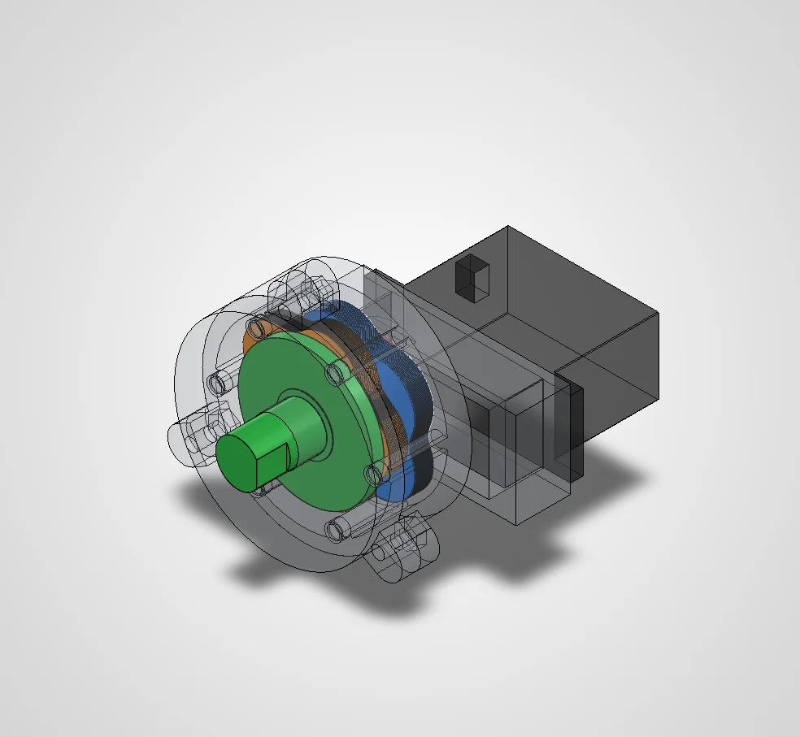
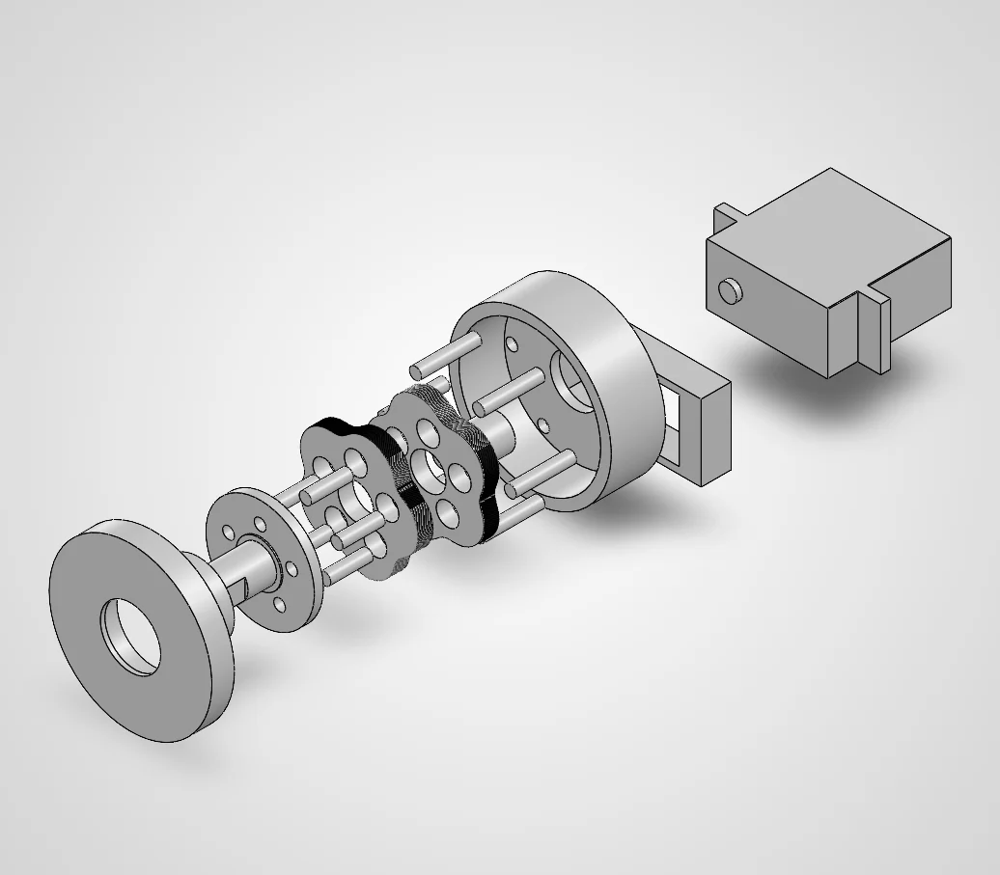

5:1 Cycloidal Gearbox
A reducer for the 6-DOF stage of the arm that mounts on a Power HD 1501MG metal-gear servo. I designed it in SolidWorks and analysed in simulation how a printed version behaves under load.
- My part
- CAD, contact modelling, simulation
- Tools
- SolidWorks, ANSYS Mechanical, Python
- Ratio
- 5:1, output reversed
- Status
- Designed and analysed in simulation. No physical tests yet.
This page is a piano roll. Its keys run down the left edge: click one, or click the paper to punch a note. Scrolling plays it.


The design
In a cycloidal drive, an eccentric input rolls a lobed disk around a ring of fixed pins, and output pins sitting in holes in the disk turn the output slowly the other way. Mine gives 5:1 and uses an epitrochoid profile that stays free of interference over a full input revolution.
I took it through several versions in SolidWorks, from steel pins and FDM printing to SLA and resin versions with every pin printed. Each process has its own running clearance, between 0.15 and 0.3 mm.
The analysis
CAD can show that a reducer moves. How much torque a printed one carries, how much play it has and how much of the servo’s power reaches the joint all depend on contact between the pins and the disks. So I built a contact model in Python and checked it against a separate contact analysis in ANSYS.
Together they cover load sharing, the strength of the printed features, backlash and print tolerance, efficiency, heat and wear. The practical conclusion for the arm is that a printed version can’t take the servo’s full torque, so the joint needs a torque limit in the controller.
I’m keeping the models and detailed results for a paper, so this page gives only the outline.
What’s next
All of this is simulation so far. The next step is to print the resin version and measure how it performs.